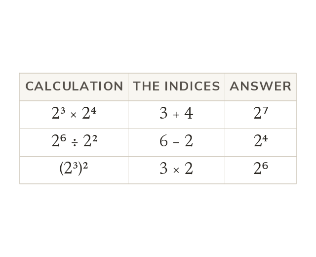

The index laws
Same base multiplied: add the indices. Divided: subtract them. A power of a power: multiply them.
When the same base is multiplied, the indices add; when it is divided, they subtract. Raising a power to a further power multiplies the two indices, since the outer power repeats the inner one that many times.